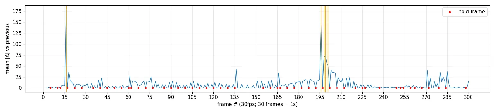

逐帧手绘Frame-by-Frame Hand-Drawn
一拍二线条沸腾,纸上的手温
#EEE1BE#D33631#F2C429#1D1512#ECDA98#251C17
风格:逐帧手绘,线条沸腾。
画面:纸纹米底#EEE1BE;红#D33631黄#F2C429平涂,墨黑#1D1512粗描边;主体后柔光晕#ECDA98;排线阴影。
字体:如需文字:圆胖手写粗体逐笔写出。
动效:默认on 2s,快动作on 1s,定格on 3s;每张新图线抖±2px;挤压拉伸、残影、速度线;高潮插1-2帧满屏星爆冲击;景别硬切不推拉。
实现:Canvas笔刷;以floor(frame/step)为种子抖路径与线宽,位置按step取整。
不要:丝滑缓动;矢量死线;渐变;定格内乱抖。
内容:{在这里写你的内容}
Style: frame-by-frame hand-drawn cartoon, boiling lines.
Look: grainy cream paper #EEE1BE; flat red #D33631 and yellow #F2C429 fills, thick ink #1D1512 outlines, soft glow #ECDA98 behind the subject; hatched shadows.
Type: if text is needed: chunky rounded hand-lettering written on stroke by stroke.
Motion: on 2s by default, fast actions on 1s, holds on 3s; each new drawing jitters lines ±2px; squash & stretch, smears, speed lines; climax gets 1-2 full-screen starburst impact frames; hard cuts between shot sizes, no zooms.
Build: Canvas brush; floor(frame/step) seeds path and stroke-width jitter; positions quantized to the step.
Avoid: silky easing; dead vector lines; gradients; jitter within one held drawing.
Content: {your content here}
已剥离的内容层(提示词里不含这些)
火柴与火柴盒拟人火苗角色星火牌包装字样划火柴点燃情节角色跳舞旋转「手作 HAND MADE」标题「一帧一帧亲手点亮」标语
逐帧证据 + 运动曲线
- f089→090帧差0.06、f090→091帧差32,角标No.每2帧+1→默认一拍二(motion.txt交替率1.09)
- f033角标写on 1s(快速弹射段),f140写on 3s(定格欢呼),其余on 2s→混合步进
- 静止角落(纸纹区)换图时帧差≈4-5、同图≈0.1→每张图整帧重绘含纸纹/线条抖动
- f016、f196-201硬切:1-2帧满屏星爆冲击帧(红/黄/米三色)后接卡通烟团爆炸
- f061、f136、f271景别硬切不推拉;f271起拉出成定位钉动画纸,f277-283拇指翻页闪回旧画面
